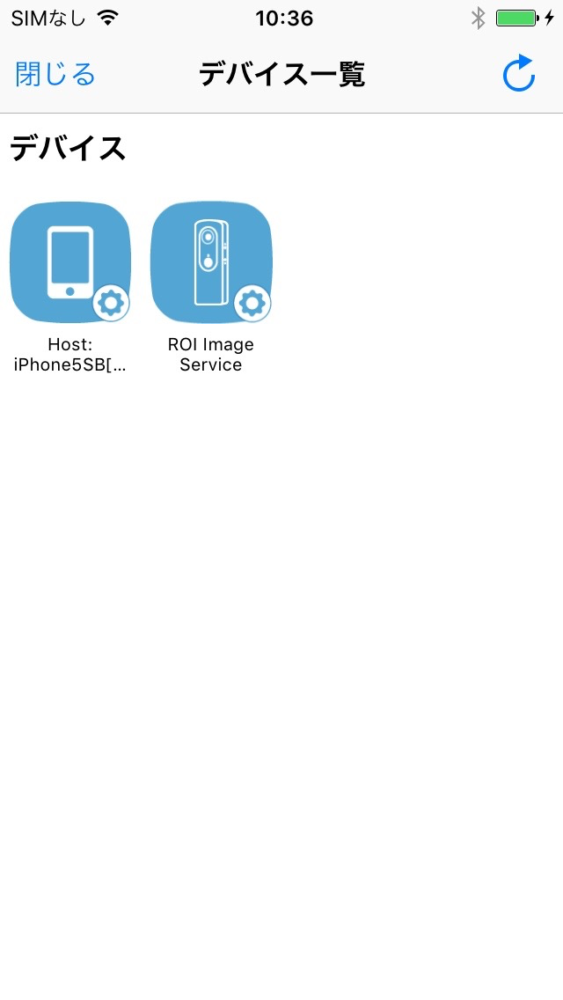

端末に接続されているデバイスの一覧が表示されます。
アイコンの左上に端末との接続種類が表示されます。
デバイスがオフラインの時は、アイコンがグレーアウトになります。
アイコンをクリックすると、デバイス確認画面に遷移します。
端末に接続されているデバイスの一覧が表示されます。
アイコンの左上に端末との接続種類が表示されます。
デバイスがオフラインの時は、アイコンがグレーアウトになります。
アイコンをクリックすると、デバイス確認画面に遷移します。

デバイス確認画面では、デバイスがサポートしているAPIを実行することができます。
そのことにより、APIがどのような挙動をするかを確認することができます。